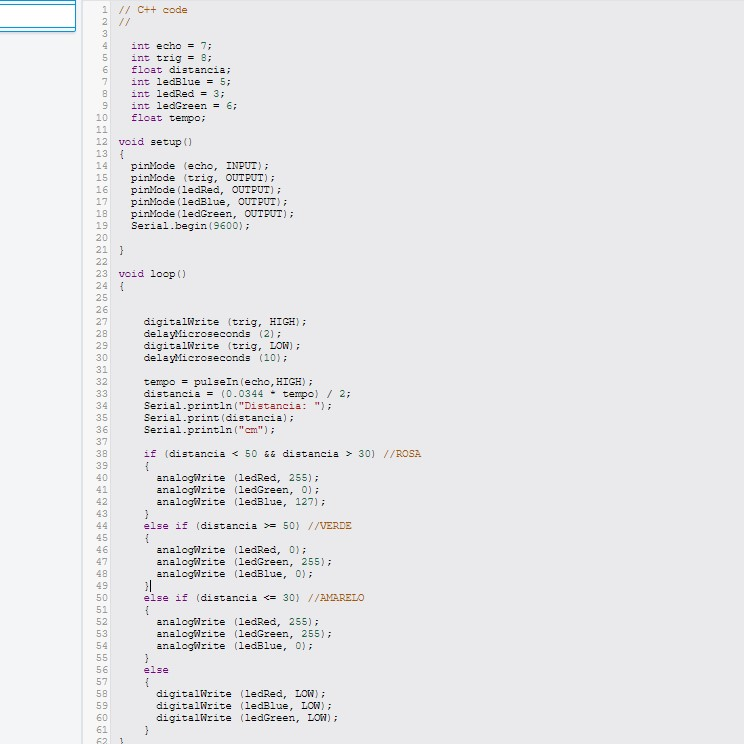

Objetivo
Controlar as cores de um LED RGB com base na distância de objetos, utilizando um sensor
ultrassônico. Dependendo da proximidade do objeto, o LED mudará de cor para representar
diferentes faixas de distância.
Materiais Utilizados
Arduino Uno R3 (Placa microcontroladora)
Protoboard (Realizar as conexões sem necessidade de solda)
LED RGB (Para emitir diferentes cores)
Resistores (Proteção para evitar que o LED RGB seja danificado)
Sensor Ultrassônico HC-SR04 (Para medir a distância do objeto)
Jumpers (Fios de conexão)
Diagrama do Circuito
O projeto utiliza um sensor ultrassônico HC-SR04 para medir a distância de objetos e controlar
as cores de um LED RGB com base nas leituras. O sensor emite pulsos ultrassônicos que retornam
ao atingir um objeto, e o Arduino calcula a distância com base no tempo que o pulso leva para
retornar. Dependendo da distância, o LED RGB acende em diferentes cores:
- Verde para distâncias maiores que 50 cm
- Amarelo para distâncias menores que 30 cm
- Rosa para distâncias entre 30 cm e 50 cm
Código Fonte & Procedimento
Código em C++ utilizando a IDE do Arduino.
Conecte o sensor ultrassônico HC-SR04 ao Arduino, utilizando os pinos 7 (Echo) e 8 (Trig).
Conecte os pinos do LED RGB (Vermelho, Verde e Azul) aos pinos 3 (Vermelho), 6 (Verde) e 5 (Azul) do
Arduino, cada um com seus respectivos resistores. No código, configuramos os pinos de entrada e saída
no void setup(). O pino Trig é configurado como saída para enviar os pulsos ultrassônicos, enquanto o
Echo é configurado como entrada para receber o pulso refletido. No void loop(), o Arduino envia um pulso
ultrassônico através do Trig e mede o tempo que o pulso leva para retornar usando o Echo. O valor da
distância é calculado e impresso no monitor serial. Dependendo da distância, o LED RGB é configurado
para acender em diferentes cores (verde, amarelo, ou rosa) com base nos intervalos estabelecidos no código.
Resultados & Conclusão
Após carregar o código no Arduino e montar o circuito, o sistema foi capaz de medir a distância com
precisão. O LED RGB mudava de cor corretamente conforme a aproximação de objetos
O sensor ultrassônico HC-SR04 mostrou-se eficaz para detecção de distâncias dentro do intervalo
programado. Este projeto demonstrou o uso de um LED RGB para indicar visualmente a proximidade de
objetos, sendo uma aplicação interessante para sistemas de alerta visual, robótica e automação.